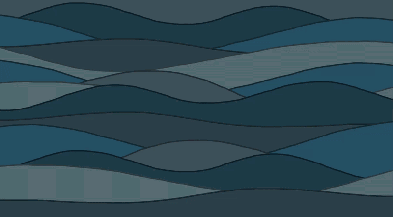
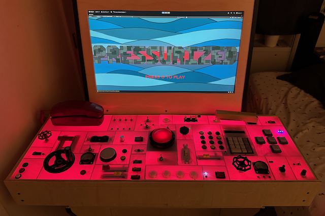
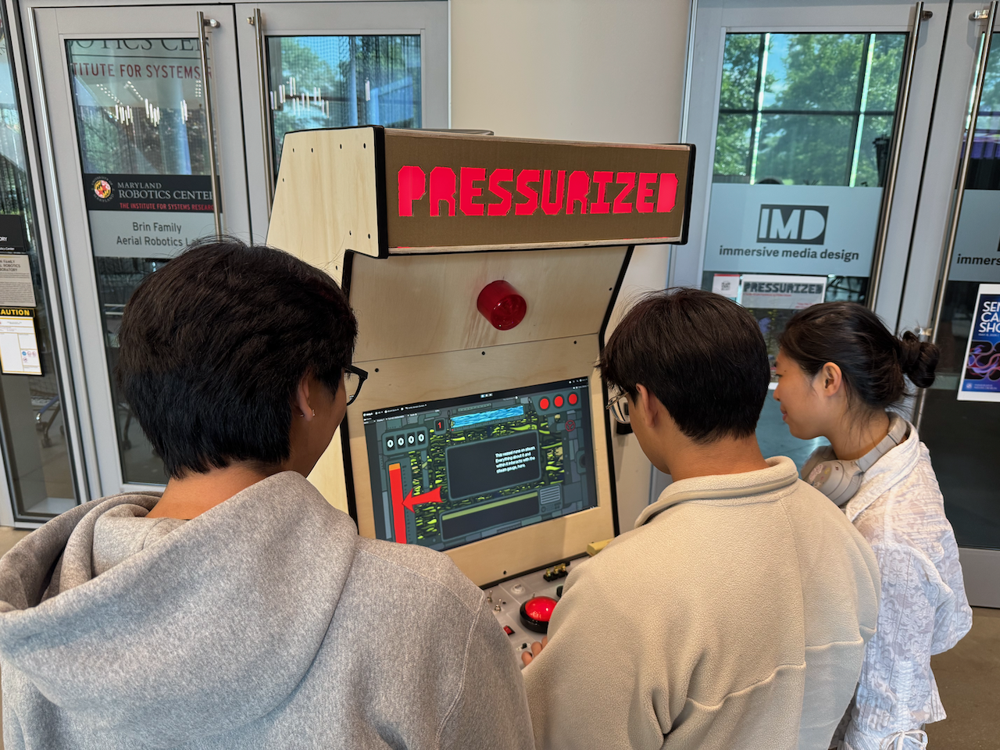
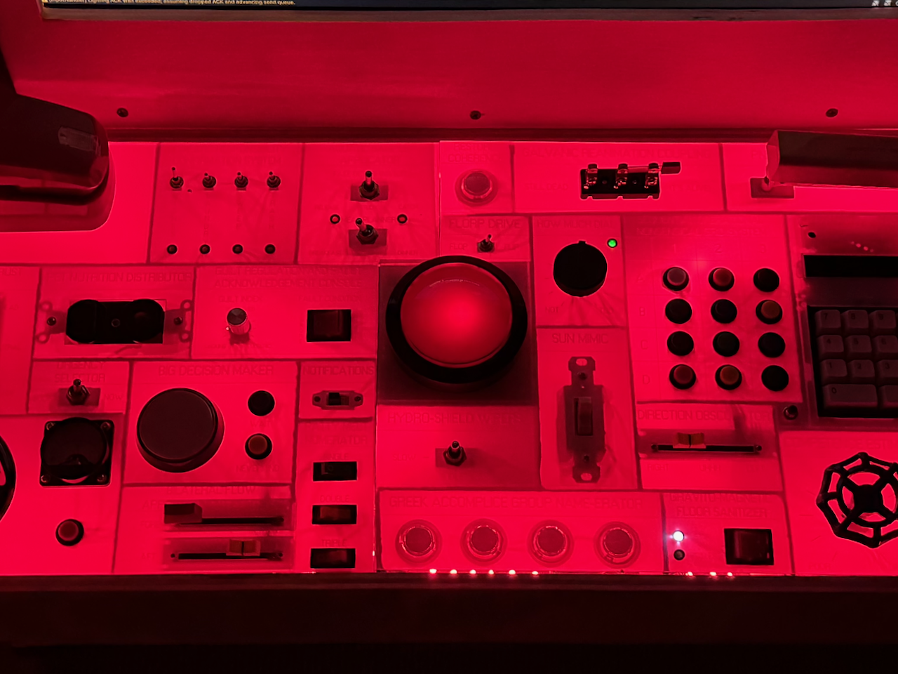
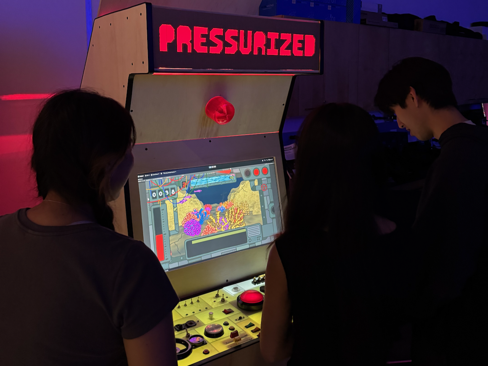

Overview
PRESSURIZED is a tactile arcade experience developed by Holden Denyer as a Senior Capstone project in the Immersive Media Design program at the University of Maryland. The project pairs a hand-built arcade cabinet with a custom physical controller, an expansive panel of real-world switches, dials, buttons, knobs, faucet valves, a hand wheel, a stapler, a telephone handset, and more, all wired to a Unity-built submarine game. Players pilot a submarine on a deep-sea mission, responding to on-screen command prompts by locating and operating the correct physical input on the control deck.
Built over the course of a full academic year across Capstone I and II, PRESSURIZED explores how tactile, physical interfaces can reshape the experience of digital gameplay. Where conventional games favor speed and abstraction, PRESSURIZED focuses on materiality, procedure, and the cognitive experience of interacting with real mechanical controls. The full cabinet, controller, and game were designed, built, and programmed entirely by me.


Click image to view gallery
The Experience
Upon approaching the arcade cabinet, players see a large glowing marquee displaying the PRESSURIZED logo in red, backlit lettering. Below it, an alarm siren light signals the current game state. The player steps up, presses the BIG RED BUTTON to begin, and is guided through a brief tutorial introducing the game mechanics.
Once gameplay begins, the on-screen view shows an underwater scene scrolling through multiple randomized biomes. Command prompts appear in a console area, instructing the player to interact with specific modules on the physical controller. Each module is labeled with absurd names laser-etched directly onto the acrylic control panel surface. Faster responses earn higher scores through a combo-based dynamic scoring system.
PRESSURIZED challenges players with a multi-tasking experience. While handling incoming command prompts, players must simultaneously crank a valve to manage steam pressure, pick up the ringing phone to answer their nagging boss, and utilize a directional button grid to defend the vessel from incoming enemies. When the player reaches the end of a level, a boss encounter is triggered: aquatic beasts appear on screen in one of multiple zones, and the player must press the corresponding button in a directional grid to land hits. LED backlighting on the controller reacts to gameplay events. At the end of each life, a new element of vessel damage is revealed: cracked glass, burst steam valves, and blaring alarm lights both in-game and in front of the player. The cabinet accommodates one or more players side by side, enabling a unique cooperative experience.

Click image to view gallery
Game Systems
PRESSURIZED evolved from its Capstone I prototype, Control Deck, which established the core concept of a Unity game played through a handcrafted panel of physical inputs. Early user testing confirmed the concept was compelling, players always wanted to try again- but also revealed critical weaknesses: command prompts were too vague to parse quickly, and extended play felt repetitive. Players often ignored the submarine visuals entirely. Capstone II addressed each of these issues through targeted system development.
The game architecture centers on several interconnected systems:
- Command Manager: generates time-based tasks and validates correctness of physical inputs. Commands reference text and symbol labels laser-etched onto the panel, replacing the earlier image-based prompt system for faster readability.
- Dynamic Scoring: faster fulfillment of command prompts yields higher point multipliers. Score thresholds trigger boss encounters, ensuring difficulty curves to each player's ability.
- Steam Pressure Management: a hand wheel allows players to crank the valve to manage steam pressure, with the pressure gauge displayed on screen to indicate the current pressure level. Setting the pressure too high or too low will cause the vessel to take damage.
- Phone Call System: a telephone handset allows players to pick up the phone to answer their nagging boss. The phone will ring and the player must answer it within a defined time limit. If the player misses the call, the boss will become angry and dock the player's pay (their score).
- Boss Battle System: aquatic creatures spawn at score thresholds and move between distinct screen zones correlated with physical buttons in a directional grid. Three hits defeat a boss; three misses let it escape.
- Biome System: randomized selection between multiple underwater environments for each level, each with unique assets and a corresponding boss type with customizable sprites and movement patterns.
- Damage Progression: each lost life reveals new visual damage like cracked glass, burst steam valves, and alarm lights to build dramatic tension through the game's three-life structure.
- Game Loop: a complete arcade cycle from start screen with logo reveal, through tutorial, gameplay, and end-game scoring screen, looping indefinitely for walk-up play.


Click image to view gallery
Physical–Digital Integration
At its core, PRESSURIZED investigates how physical inputs alter the cognitive and sensory experience of interacting with software. The project integrates hardware, firmware, and software into a cohesive control loop. Physical interfaces introduce momentum, dexterity, and hesitation — factors rarely considered in digital UX — and the system was designed to respond like real control equipment rather than an arcade button panel.
The technical pipeline consists of:
- Arduino Firmware: two Arduino Mega boards and one Arduino Uno scan digital and analog inputs and transmit updates via a parsable serial protocol. The controller maxed out the RAM on all three boards, requiring all processing logic to remain in Unity.
- Serial Communication: Arduino outputs hardware state messages in
a consistent format —
BTN,pin,valuefor momentary buttons,SW,pin,valuefor toggle switches, andANA,index,valuefor analog dial readings. - SerialManager.cs: handles asynchronous serial reading and input validation inside Unity, managing threading and IO constraints to keep the UI responsive through queues and state machines.
- LED System: LED backlighting strips respond dynamically to game state, with animation data sent from Unity to the Arduino Uno rather than processed locally. Individual modules illuminate when active, signaling which sections are susceptible to incoming command prompts.
Custom debounce and change-detection strategies handle switches and buttons, while analog noise is controlled through step-based value thresholds to prevent excessive serial traffic. Input states for some modules required variable inversions due to code written before the physical hardware existed.

Click image to view gallery
Digital Fabrication
The physical controller is a fully custom hardware interface containing over thirty inputs across numerous distinct component types: faucet valves, a hand wheel, a stapler, sliders, toggle switches, arcade buttons, a number keypad, a telephone handset, rotary dials, and more. Because each category required a unique wiring approach, the entire board was hand-assembled - cutting, crimping, and routing individual wires into the Arduino boards acting as the main IO controllers.
The controller housing began with hand sketches emphasizing visual density, chaos, and the overwhelming variety of submarine-style controls. This layout was converted into a precise CAD model, allowing dimensions and component spacing to be resolved before fabrication. The resulting vector linework was exported for laser cutting with kerf adjustments and color-coded cut/engrave paths. The acrylic control panel surface was laser-etched with absurd module names that serve as the in-game command reference labels.
The arcade cabinet was constructed from four 4×8-foot plywood sheets and four 2×4 studs, following ADA-informed height guidelines with controls seated below 36 inches and a non-reflective matte display screen. A glowing marquee with the PRESSURIZED logo in backlit red lettering was mounted above the screen. An alarm siren light on the cabinet exterior signals game state to both the player and onlookers.
Cardboard module dividers were fabricated and installed inside the controller housing to organize wiring across the dense input array. The entire panel operates as a self-contained USB device, connecting to the game laptop through daisy-chained Arduino boards via a single USB cable chain.
Visual and Audio Design
The game art is rendered in a doodle-like, hand-drawn style with distinct outlines and saturated color, a deliberate aesthetic that captures the comedic and absurd nature of the experience. The underwater world features multiple randomized biomes, each with unique environment assets and a corresponding boss creature. Audio includes ambient underwater sound, alarm effects, and reactive sounds to cue player action.
The controller panel combines laser-etched acrylic over a plywood base, with LED strip backlighting that responds dynamically to game state. The visual design carries through from the digital game to the physical hardware: the alarm light, the marquee, and the controller's chaotic layout all reinforce the feeling of piloting a vessel perpetually on the edge of failure.
Accessibility was considered throughout development. The color scheme was tested with colorblind users who confirmed all interface colors were distinguishable. Text and symbol labels on the controller replace earlier image-based prompts, improving readability across audiences. A gradual difficulty curve and tutorial sequence ensure first-time players can engage without being overwhelmed.

Click image to view gallery
Development Timeline
PRESSURIZED was built across two semesters. Capstone I established the core prototype — a Unity game with a compact handcrafted controller. Capstone II refined and expanded every dimension of the project:
- Early Semester: Codebase refactoring for modularity. Biome system overhauled from two static environments to randomized multi-biome transitions. Scoring system redesigned for dynamic multipliers.
- Mid-Semester: Boss battle system, combo scoring, and multiple biomes fully implemented. Official PRESSURIZED title, logo, and start menu animation created.
- March 21: Logo created.
- March 23: New physical inputs sourced and components prepared.
- April 2: Arcade cabinet CAD drawings finalized with ADA-compliant dimensions.
- April 4–11: Cabinet construction. Four plywood sheets and four 2×4 studs cut, sanded, and assembled.
- April 19–22: Controller CAD finalized, panel laser-cut and etched with module labels.
- April 26–30: Module dividers installed, initial input wiring completed across all modules.
- May 1: LED backlighting installed; tertiary Arduino Uno added for lighting data.
- May 3: Full unit debugging. All systems run together for the first time.
- May 4: Marquee created and installed.
- May 8, 2026: Final showcase presentation at the Iribe Center, University of Maryland.
Technical Challenges
The most persistent challenge was serial communication between Unity and the Arduino-based controller. The controller maxed out the RAM on two Arduino Mega boards and an Arduino Uno, requiring all processing logic to remain in Unity rather than on the microcontrollers. Managing asynchronous input streams while keeping the UI responsive demanded careful architectural decisions around queues, state machines, and command validation.
Input states for some modules were initially inverted due to code written before the physical hardware existed, requiring variable flips throughout the command manager script. LED animation data had to be sent from Unity to the Arduino rather than processed locally, necessitating reworked serial communication scripts.
Physical interfaces introduced factors rarely considered in digital UX: momentum, dexterity, and hesitation. Building timing buffers, analog settling windows, and validation logic ensured the system respected human input patterns rather than demanding digital precision.
A significant design pivot occurred when the original plan for a fully enclosed, seated arcade booth was reconsidered. While immersive, it was too labor-intensive and would limit audience viewing. The decision to build a classic upright arcade cabinet provided equivalent craft and polish while remaining accessible and viewable to a crowd.
Takeaways
PRESSURIZED required development across multiple disciplines: embedded programming, serial communication, Unity architecture, physical fabrication, visual design, and audio integration. Coordinating these components provided valuable insight into how hardware design and software systems negotiate timing, reliability, and interaction patterns.
A key takeaway involved designing interaction behaviors that respect human input. Physical interfaces introduce cognitive and motor considerations that digital UX rarely accounts for. The project demonstrated how meaningful physical interaction can reshape gameplay, promoting immersion through materiality instead of solely through graphics or audio feedback.
The project now serves as a foundation for future work in tangible interfaces, simulation training, and interactive installations. In an era that progressively targets digital input systems for their convenience and cost-efficiency, PRESSURIZED demonstrates the power of physical input systems and their ability to enhance an experience. Planned enhancements include expanding the panel's physical footprint, introducing modular subsystems, and exploring higher-durability materials for sustained use in interactive installations.
Showcase
Presented: Friday, May 8, 2026
Location: Iribe Center Main Lobby, University of Maryland
Program: Immersive Media Design, Computing Track